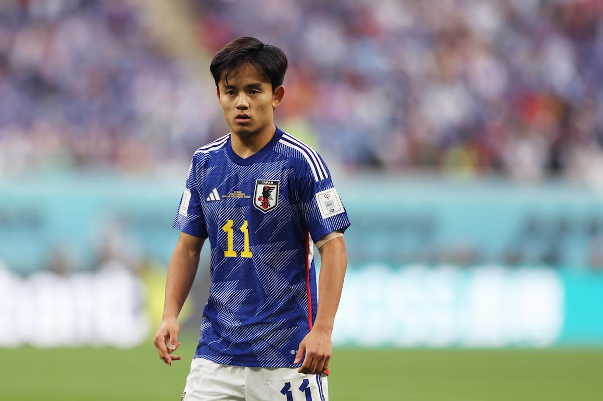

Japón se ha convertido en una de las selecciones más importantes de Asia en la FIFA World Cup. Desde su primera participación en 1998, ha logrado avanzar varias veces a los octavos de final y ganar reconocimiento internacional.
La selección japonesa destaca por su disciplina, velocidad y juego colectivo. Además, ha desarrollado futbolistas reconocidos mundialmente como Keisuke Honda y Shinji Kagawa.
Japón también fue sede del Mundial de 2002 junto a Corea del Sur, siendo la primera Copa del Mundo organizada en Asia. Gracias a su crecimiento constante, el país es considerado una potencia emergente del fútbol mundial.
.webp)
Takefusa Kubo es una de las mayores estrellas del fútbol japonés y uno de los jugadores más importantes de la selección de Japón. Juega como extremo en la Real Sociedad y destaca por su velocidad, regate y creatividad en ataque. Formado en la cantera del FC Barcelona, Kubo se ha convertido en el referente ofensivo de Japón y es considerado por muchos como el mejor futbolista japonés de la actualidad.
